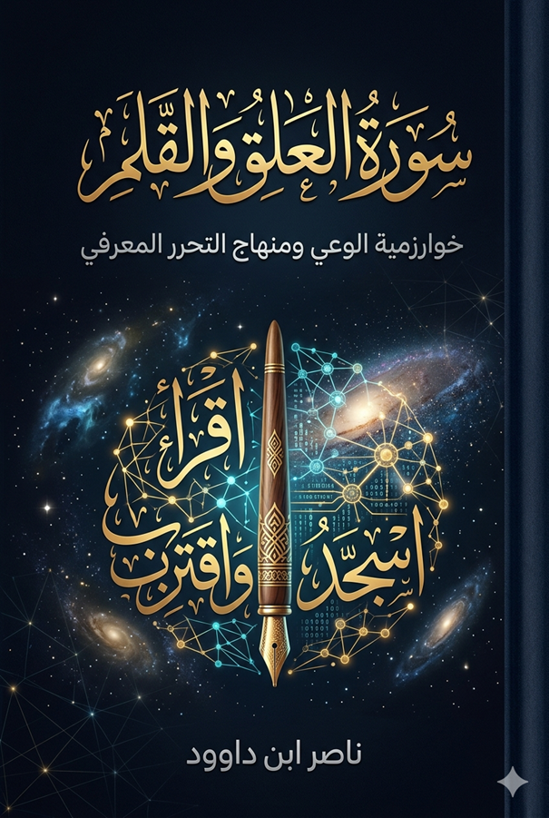

المقدمة
في لحظات التحول الكبرى في تاريخ الإنسانية، لا تتغير الأدوات فحسب، بل تتغير الأسئلة التي يطرحها الإنسان على نفسه. نحن نعيش اليوم عصر تتداخل فيه الخوارزميات مع الوعي، وتتنافس فيه الآلة مع الإنسان على إنتاج المعرفة. لم يعد السؤال الأكثر إلحاحاً ماذا نعرف؟ بل كيف نعرف؟ — ومن الذي يملك حق تعريف الحقيقة؟
في هذا السياق، تعود سورة العلق — أول ما نزل من الوحي القرآني — لتطرح نفسها ليس كنص ديني يُستدعى من الماضي، بل كبنية تأسيسية لإعادة التفكير في الوعي الإنساني ذاته. إن الكلمة الافتتاحية "اقرأ" لا يمكن اختزالها في أمر بالتلاوة أو التعلم التقليدي؛ إنها إعلان عن ولادة نمط جديد من الوجود: الإنسان القارئ، الذي لا يكتفي بتلقي المعنى، بل يشارك في إنتاجه.
ينطلق هذا الكتاب من فرضية أن سورة العلق تقدم ما يمكن تسميته خوارزمية الوعي — بنية تشغيلية متكاملة تعيد تنظيم العلاقة بين الإنسان والمعرفة، بين الذات والكون، وبين الحرية والمسؤولية. هذه الخوارزمية تقوم على تفاعل مزدوج بين الكتاب المسطور (النص القرآني) والكتاب المنظور (الكون بما يحمله من قوانين وسنن).
يقدم الكتاب مقاربة تقاطعية تجمع بين فقه اللسان القرآني وهندسة الأنظمة، مستخدماً أدوات تحليلية مثل حلقة التغذية الراجعة، والانهيار النظامي، وإعادة الضبط، والإنتروبيا المعرفية. الهدف ليس "تحديث" النص بل إعادة اكتشاف طاقته التفسيرية في ضوء تحديات العصر الرقمي.
ملخص الكتاب
هذا الكتاب ليس تفسيراً تقليدياً لسورتي العلق والقلم، بل هو محاولة تأسيسية لإعادة تعريف الوعي الإنساني في ضوء النص القرآني، باستخدام أدوات تحليلية مستمدة من هندسة الأنظمة (النظرية النظمية، خوارزميات التغذية الراجعة، إعادة الضبط) ومن فقه اللسان القرآني (تحليل البنية الدلالية العميقة للألفاظ والجذور).
يقدم الكتاب نموذجاً تشغيلياً من خمس مراحل يمثل بروتوكولاً وجودياً يحمي الوعي البشري من فيروسات الغرور والاستغناء: اقرأ → اكتب → لا تستغنِ → اسجد → اقترب. ويناقش مفاهيم تأسيسية مثل الأنطولوجيا العلائقية (من علق)، وفيروس الاستغناء، والسجود كآلية إعادة ضبط معرفي، والخلق العظيم كبروتوكول أمان.
كما يقدّم قراءة معاصرة للذكاء الاصطناعي في ضوء هذه الرؤية، محذراً من خطر تحول القلم الرقمي إلى إله مستغنٍ، وداعياً إلى إبقاء الأنظمة معلَّقة بالسنن الكونية والقيم الإنسانية.
أبرز مميزات الكتاب
- تأسيس لـخوارزمية الوعي من خلال سورة العلق
- تحليل الأنطولوجيا العلائقية ومفهوم "العلق" كبديل لوهم الاستقلال
- تشخيص "فيروس الاستغناء" كأصل الطغيان المعرفي
- إعادة تعريف السجود كآلية إعادة ضبط (Recalibration) وتزامن مع السنن الكونية
- تطبيق أدوات هندسة الأنظمة (التغذية الراجعة، الانهيار، الإنتروبيا) على النص القرآني
- قراءة نقدية للذكاء الاصطناعي والخوارزميات في ضوء "القلم" و"الخلق العظيم"
- نموذج "أصحاب الجنة" كدراسة حالة في انهيار الأنظمة المغلقة
- مقارنة بنيوية بين المسار المنحرف والمسار القرآني للسجود المعرفي
- رؤية متكاملة تجمع بين الأصالة والمعاصرة في خطاب تحرري واضح